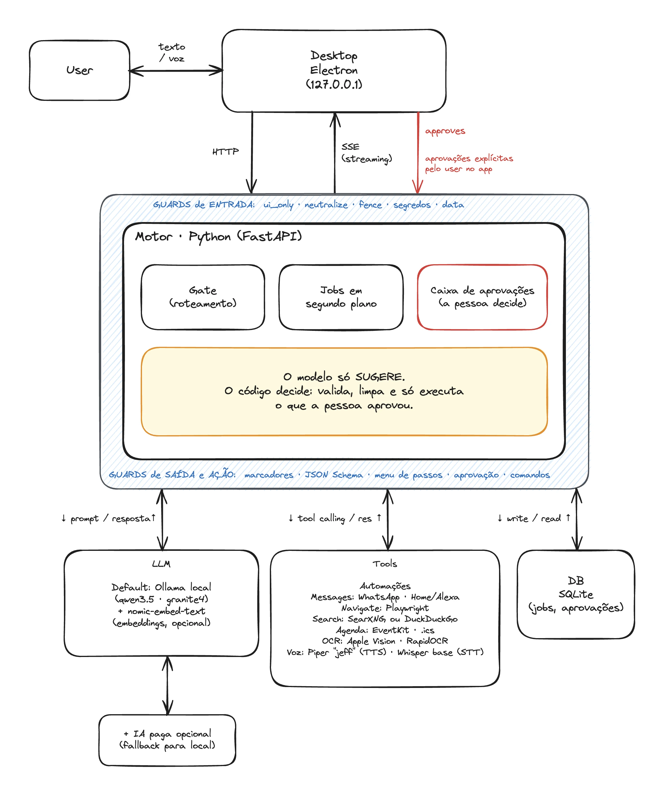
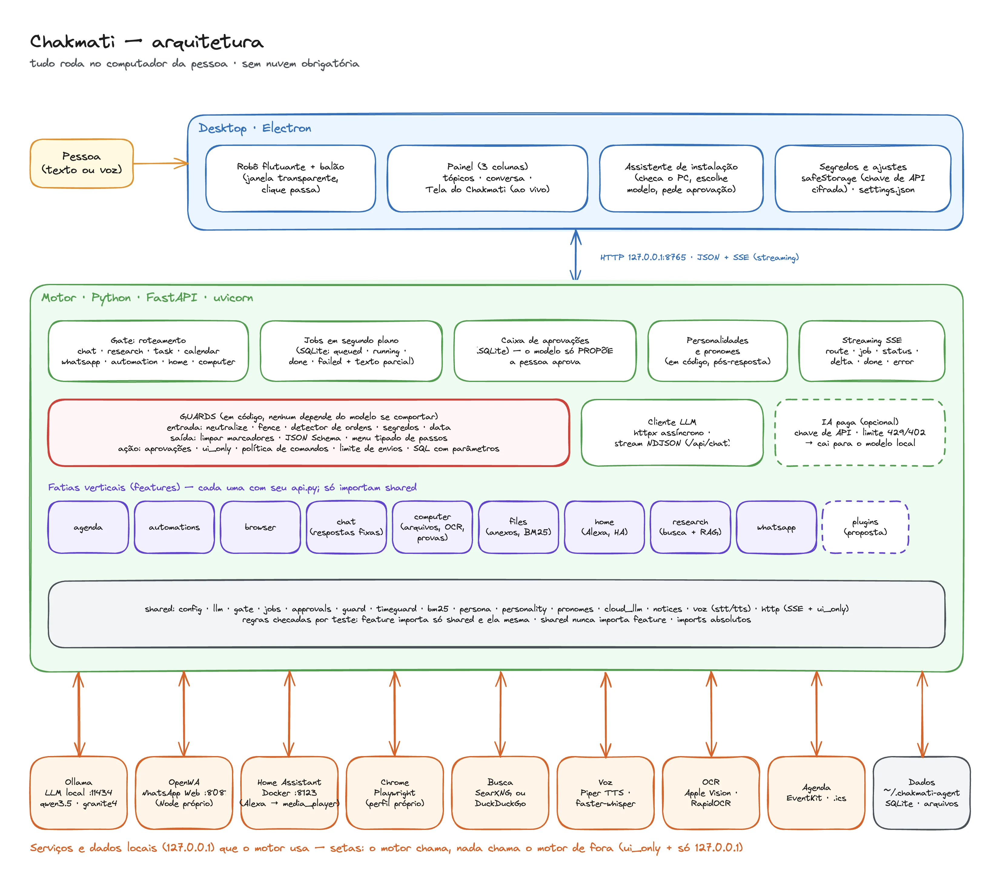

Tecnologia e arquitetura
Um assistente local, por dentro.
Gratuito.Open Source.Brasileiro. (até demais)
O Chakmati é um app de desktop (Electron) que conversa, por HTTP local, com um motor em Python (FastAPI). O motor fala com um LLM rodando na própria máquina, via Ollama. Por padrão, nada precisa sair do computador.
Arquitetura
Três processos, uma porta local.
A interface e o motor são programas separados. Se o motor cair, o robô avisa; se o app fechar, o motor continua dono dos trabalhos em andamento.
127.0.0.1:8765 (JSON e SSE)127.0.0.1:11434- Fatias verticais (feature slices)Cada capacidade (
agenda,browser,files,research,whatsapp,home...) é uma pasta com seu domínio e seu próprio roteadorapi.py. Uma capacidade nova é uma pasta nova. - Regras checadas por testeUma feature importa só
sharede ela mesma, nunca outra feature.sharednunca importa feature.tests/test_architecture.pyreprova o build se alguém quebrar isso. - Raiz de composição
main.pymonta cada serviço a partir das configurações e sobe o servidor;app/api.pymonta os roteadores. - Modelos pequenos locaisAlém do LLM de conversa (Qwen3.5 ou
granite4:3b, conforme a memória do computador), cada tarefa tem seu modelo pequeno:Whisper baseouve a voz (~140 MB), o Piper com a vozjeffem pt-BR fala (~60 MB) e onomic-embed-text, via Ollama, é opcional e faz embeddings para casar o sentido dos arquivos. Também opcionais:deepseek-r1para explicar provas e o Laya (não recomendado). - Guards em códigoEntre a pessoa, o LLM e o que o app executa há guards que não dependem de o modelo se comportar: limpam o texto de fora (
neutralize,fence), validam o que o modelo devolve (JSON Schema, menu de passos) e só deixam agir o que a pessoa aprova (caixa de aprovações,ui_only). Todos estão na seção Guards no LLM.
Arquitetura · resumida
O modelo sugere. O código decide.
O mapa curto: a pessoa fala com o Desktop, o Desktop com o motor, e o motor com o LLM, as ferramentas e o banco. Os guards cercam o motor, e quem aprova o que muda algo é a pessoa.

Arquitetura · detalhada
Todas as peças e os serviços locais.
O mesmo mapa por dentro: o que há no Desktop, no motor (gate, jobs, aprovações, guards, features, shared), os modelos pequenos locais e os serviços que o motor usa.

Roteamento e trabalhos
Primeiro decide para onde vai, depois quanto tempo leva.
Um gate classifica cada mensagem em uma rota: chat, research, task, calendar, whatsapp, automation, home ou computer.
- Gate por regrasO padrão é um conjunto de expressões regulares em português e inglês, instantâneo e sem gastar modelo. Um gate opcional usa o Laya (modelo de classificação) quando a confiança das regras é baixa.
- Trabalhos em segundo planoResposta simples sai na hora. Trabalho lento (pesquisa, tarefas em vários passos) vira um job gravado em SQLite, com estados
queued,running,done,failede texto parcial. - Parar de verdadeO botão Parar cancela o job no motor: o navegador fecha e nada mais é feito. Um job que ainda não começou nunca começa.
- O plano vem primeiroAntes de um trabalho de vários passos, o código monta o plano olhando a pasta e o pedido (qual ferramenta, qual modelo) e o mostra ao usuário.
Comunicação com o LLM
Streaming de ponta a ponta.
O motor chama /api/chat do Ollama com httpx assíncrono. A resposta chega em NDJSON, pedaço por pedaço, e é repassada ao app como Server-Sent Events.
- SSE, não WebSocketCada linha é
data: {json}, com tiposroute,job,status,delta,doneeerror. Quem reconecta no meio recebe o texto desde o início (GET /jobs/<id>/stream).Por quê? 1. O fluxo é de um lado só. O texto desce do motor para a tela; o que sobe (o pedido, o Parar, o “aprovar”) é uma chamada HTTP comum. WebSocket é uma conversa nos dois sentidos que aqui não existe. 2. Segurança. A API só aceita escrita com um cabeçalho que uma página de outro site não consegue enviar sem um preflight de CORS, e o motor nunca o libera. O WebSocket não passa por CORS, e o motor ficaria aberto a qualquer página que o navegador do usuário abrisse. 3. Retomar de graça. Cada trabalho vive no SQLite com seu texto parcial, e quem reconecta lêGET /jobs/<id>/streame recebe tudo desde o início, sem protocolo de reconexão próprio. 4. Menos peça. É HTTP puro (FastAPI e o navegador já falam), casa linha a linha com o NDJSON do Ollama e não pede biblioteca nem estado de conexão a mais. - Saída com gramáticaQuando a resposta precisa ser estruturada, vai um JSON Schema no campo
formatdo Ollama (decodificação restrita por gramática) etemperature0. A resposta não pode ser prosa nem uma ação desconhecida. - Menu tipado de passosO modelo escolhe entre
mkdir,copy,move,list,show,create_fileecommand; o código escreve o comando, com aspas. Erro de digitação decpdeixa de ser possível. - Feito para modelos pequenosModelos de até cerca de 4B ganham prompt mais curto com exemplos, pedidos com “depois” ou “então” são lidos uma parte por vez, e o que dá para decidir por regra nem passa pelo modelo.
- IA paga opcional, com reserva localCom uma chave de API, o motor chama o provedor primeiro. Em limite (HTTP 429 ou 402) o modelo local assume pelo tempo do
Retry-After, ou 15 minutos, e depois tenta de novo.
Arquivos e RAG
RAG leve: BM25 por padrão, embeddings opcionais.
Em vez de mandar o arquivo inteiro ao modelo, o Chakmati recupera os trechos que respondem à pergunta. Funciona em computadores modestos porque, por padrão, não há banco vetorial nem modelo de embeddings: só palavras (BM25).
pypdf, python-docx, openpyxl, python-pptx. Só o texto é guardado, nunca o original.- Pouca memória, pouco discoArquivo lido uma vez ao anexar, limite de 20 MB e 1,5 milhão de caracteres, texto extraído guardado com id aleatório e apagado depois de 7 dias.
- Embeddings, se a pessoa ligarCom um modelo de embeddings configurado (
nomic-embed-text, via Ollama em/api/embed), o motor soma a similaridade por cosseno entre a pergunta e cada trecho. Serve para casar o sentido, até entre idiomas. Vem desligado: num computador modesto, nada a mais roda. - O mesmo ranqueador, em dois lugares
shared/bm25.pyserve tanto os arquivos anexados quanto os trechos de páginas da pesquisa na web.
Leitura de imagens (OCR)
O OCR acha o texto. A marca, quem mede é o código.
Para provas escaneadas ou fotografadas (PDF sem texto, JPG, PNG), o código faz dois trabalhos e o modelo nunca vê a página.
- Mac: Apple VisionJá faz parte do macOS (
pyobjc-framework-vision), nada para baixar. As páginas de PDF viram imagem compypdfium2. - Windows e Linux: RapidOCR
rapidocr-onnxruntime(ONNX Runtime), instalado só se a pessoa marcar. Ainda não foi testado nesses sistemas. - O X não é lido como textoManuscrito é o pior caso de OCR. O código mede a tinta na caixinha de cada alternativa e compara com as caixas vazias da mesma prova. Marca fraca vira “marca duvidosa”, nunca uma decisão.
- Modelo de raciocínio só para explicarCorrigir é código. Explicar o erro de cada aluno usa um modelo que pensa (
deepseek-r1) quando cabe na memória do computador; senão, o modelo de conversa, e o plano avisa.
Pesquisa na web
Busca, extrai, ranqueia e só então resume.
httpx baixa a página e trafilatura + lxml tiram o texto útil.Perguntas sobre “o mais recente” reordenam os resultados por data. O texto que vem da internet é sempre tratado como dado, nunca como ordem.
Voz
Falar e ouvir sem mandar áudio para a nuvem.
- Falar: Piper TTSVoz neural em português do Brasil, sintetizada no computador (voz conferida por SHA-256). O Piper é GPL-3.0, então roda como um programa separado (
python -m piper): o motor só manda o texto e recebe o áudio, sem importá-lo. - Ouvir: faster-whisperReconhecimento de voz local (modelo Whisper “base”) para a frase de chamada e os comandos.
PyAVdecodifica o áudio. - Extras opcionaisCada um é um extra do
pyproject.toml(voice,listen). Sem eles o motor sobe normalmente e a função responde dizendo o que instalar.
Integrações
Ler é livre. Agir é sempre uma proposta.
- WhatsApp (OpenWA)Controla o WhatsApp Web com um Node.js próprio, só em
127.0.0.1. Envio é limitado a 20 por hora, com intervalo de 3 s, e o destinatário é casado por código com a lista de conversas. - AgendaEventKit no macOS (
pyobjc) ou arquivo.ics(icalendar+recurring-ical-events). O modelo só traduz o pedido em um JSON pequeno; títulos de eventos nunca voltam a ele. - Casa e Alexa (Home Assistant)Cada Echo aparece como
media_playerno Home Assistant, com login pelo fluxo OAuth dele. Se não houver um, o Docker é instalado e configurado com chamadas fixas, sem shell. - Caixa de aprovaçõesUma ação só é proposta (tabela em SQLite). Executar exige
approve, e a API só aceita isso vindo da janela do próprio app (cabeçalhoX-LiteAgent-UI).
Segurança
Prompt injection: nada depende do modelo se comportar.
Mensagens de WhatsApp, texto de OCR, arquivos e páginas da web são dados, nunca comandos. A defesa é em camadas, e a primeira é estrutural.
- 1. EstruturaTexto de terceiros só chega a prompts que não conseguem criar ações. Ação só existe quando o pedido é da própria pessoa e ela aprova.
- 2. Neutralizar e cercar
neutralize()remove caracteres de controle, marcadores[[action:...]]e tokens de template de chat;fence()embrulha em<untrusted>. - 3. Limpar a voltaOs marcadores de ação são removidos de toda resposta feita com texto de terceiros, até quando chegam partidos em pedaços do streaming.
- 4. Avisar a pessoaTexto que parece dar ordens ao assistente é detectado, registrado e avisado.
- SQL injectionToda consulta usa parâmetros (
?), e um teste estático reprova o build se algumexecutereceber algo que não seja uma consulta literal. - Chaves cifradasA chave de API fica cifrada com o cofre do sistema (
safeStoragedo Electron), nunca emsettings.json.
Guards no LLM
O modelo sugere. O código decide.
Um LLM pequeno erra e pode ser enganado por texto de terceiros. Por isso cada risco tem um guard em código, e nenhum depende de o modelo se comportar.
Antes do modelo (o que entra)
neutralize()Tira caracteres de controle e invisíveis, marcadores[[action:...]], tokens de template de chat e títulos que imitam uma fala (System:). Por quê: texto de terceiros não pode forjar um turno nem um botão do app.fence()+ regra “não confiável”Embrulha o texto em<untrusted>e diz ao modelo que aquilo é dado. Por quê: marcar a fronteira entre o pedido da pessoa e o texto de fora.- Detector de ordensAvisa a pessoa quando o texto parece dar ordens ao assistente. Por quê: é uma dica, nunca a única defesa.
- Segredos fora do alcanceArquivos com nome de chave, senha ou carteira nunca são lidos, e o que o agente mostra passa por redação (chaves, tokens, cartão, CPF viram
[oculto]). Por quê: o modelo não pode vazar o que nunca viu. - Guard de dataPergunta sobre hoje ou sobre fatos recentes recebe a data ou vai à busca, ou o modelo é avisado de que não tem internet. Por quê: LLM não sabe o dia e responde mesmo assim.
Na resposta (o que sai)
- Limpar marcadoresRemove
[[action:...]]de toda resposta feita com texto de terceiros, até partido no streaming. Por quê: a resposta não pode mostrar um botão de aprovar. - Saída com gramáticaJSON Schema no
formatdo Ollama. Por quê: a resposta só pode ter o formato esperado, sem prosa nem ação inventada. - Menu tipado de passosO modelo escolhe um passo da lista e o código escreve o comando. Por quê: um modelo pequeno não digita um
cperrado nem um&&solto. - Explicação conferidaExplicação que cita outra alternativa como certa, ou se corrige no meio, vira “confira à mão”. Por quê: modelo pequeno erra conta e o professor precisa saber.
Antes de agir (o que executa)
- Só propor, nunca executarToda ação que muda algo vira proposta em SQLite e espera o “sim” da pessoa. Por quê: a decisão final é humana.
ui_onlyAprovar só funciona com o cabeçalho da janela do app. Por quê: uma página de outro site não consegue aprovar.- Política de comandosLista fechada de programas e opções, caminhos resolvidos dentro da pasta de trabalho, sem shell, sem sobrescrever em silêncio. Por quê: mesmo um pedido mal lido não apaga nem executa fora dali.
- Limite de enviosWhatsApp: 20 por hora, 3 s entre mensagens, destinatário casado por código. Por quê: evita bloqueio e envio em massa.
- Navegador
check_navigableecheck_resolvedsó deixam endereços públicos, em cada requisição da página.check_typedrecusa o que o modelo inventou de perigoso. Senha nunca vem do modelo. Por quê: uma página pública não alcança o motor nem a rede da casa. - Casa e automaçõesAbrir fechadura, portão ou garagem é recusado, e uma automação nunca nasce de uma mensagem recebida. Por quê: ela roda sem ninguém por perto.
- SQL com parâmetrosTodo
executerecebe consulta literal, e um teste reprova o build se não for. Por quê: nada de texto de fora vira SQL.
Desktop e distribuição
Um instalador por sistema, um ambiente Python só dele.
- ElectronRobô em janela transparente que deixa o clique passar (só o boneco e o balão capturam o mouse), painel com efeito de vidro opcional e assistente de instalação.
- electron-builder
.pkgno Mac (Apple e Intel), NSIS no Windows,.debno Ubuntu. O instalador leva o app, o código do motor e umuvcom versão fixada e SHA-256 conferido. - Ambiente Python por usuárioNo primeiro uso, o
uvcria o ambiente (Python mais dependências, ~190 MB) e instala só o que a pessoa marcar. Todo download mostra origem e tamanho e pede aprovação. - Releases por GitHub ActionsSubir uma tag
v*dispara os quatro builds em paralelo e independentes; cada um envia o instalador direto ao release, que é publicado no fim. Os instaladores ainda não são assinados.
Testes e experimentos
Laya (Jev OpenSource) para usar menos LLM. Não rolou.
O Laya é um modelo open source que dá uma probabilidade em uma única passada, sem gerar texto. A ideia era usá-lo para decidir coisas pequenas e chamar o LLM menos vezes e mais assertivamente. Medi em quatro lugares.
- 1. Escolher a rota da mensagemComo gate, acertou 57% contra 100% das regras em 14 casos (a comparação não é justa: os casos usam o vocabulário das regras). Levou ~74 ms em média, até 0,8 s na primeira chamada. As regras seguem como padrão.
- 2. Filtrar resultados de buscaEm 80 resultados reais, ranqueou bem (o modelo multilingual separou bem o que era de outro assunto) mas como filtro foi mau negócio: com corte 0,2 derrubou 5 de 10 irrelevantes e também 16 de 70 relevantes. O buscador já devolvia 87,5% de resultados relevantes.
- 3. Escolher os trechos que respondemEm “versão estável atual do Python” e do Node, o Laya mediu o assunto, não a resposta: subiu trechos de “como ver a versão instalada”. A resposta saiu desatualizada ou ausente. O BM25 fez igual ou melhor a 0,1 ms por trecho, contra 30 a 60 ms do Laya (100 a 400 vezes mais lento).
- 4. Podar o rascunho do próprio modeloEle colocou afirmações plausíveis, mas erradas, no mesmo nível ou acima das corretas: mede relevância, não verdade. O laço de poda ficou desligado por padrão.
Em resumo: o Laya é bem rápido (15 a 75 ms) e bom em separar o relevante do irrelevante, mas, no Chakmati, não melhorou as respostas e a economia de LLM não apareceu. Virou um extra opcional, desligado, e o instalador o marca como não recomendado.
- O que ficou no lugarRegras para o que dá para decidir sem modelo e BM25 em Python puro para escolher trechos. Em um teste de dois casos, embeddings (
nomic-embed-text) acertaram um deles, mas custam mais tempo e um modelo a mais. - Os limites desses testesAmostras pequenas (14 casos, 8 buscas, 2 perguntas de versão, 32 trechos), rótulos feitos à mão e um único buscador. É indicativo, não conclusivo.
- Testado tambémUsar o Laya só como pré-filtro barato, deixando o LLM julgar apenas o que sobra, não compensou.
Speech-to-Speech (STS).
Um modelo de fala para fala não transcreve o áudio para só depois elaborar a resposta: ele ouve e responde em áudio, direto. A ideia era dar à pessoa a experiência de conversar por voz com uma IA.
Em resumo: ainda não são modelos maduros para usar em produção em um contexto em que quero reduzir ao máximo o uso de RAM, rodando em processamento leve, e ao mesmo tempo dar à pessoa a experiência de interagir com uma IA por voz.
- O que ficou no lugarUm caminho em etapas, tudo local: reconhecimento de voz com
faster-whisper, o LLM para pensar a resposta e síntese de voz com Piper TTS.
Outros TTS.
Além do Piper, que ficou, testei outras vozes sintetizadas. Nenhuma delas entrou no Chakmati.
- OmniVoiceTestado, não adotado: usa mais RAM e tem menos performance.
- drama3Testado, não adotado: usa mais RAM e tem menos performance.
- Pocket TTSTestado, não adotado: usa mais RAM e tem menos performance. O Chakmati não usa ele hoje.
- MOSS-TTSTestado, não adotado: usa mais RAM e tem menos performance.
- O que ficou no lugarPiper TTS com a voz
pt_BR-jeff-medium: ~60 MB, roda na CPU, conferida por SHA-256 e só baixada com a aprovação da pessoa.
LLMs para outras funções.
Testei vários tamanhos da família Qwen3.5 em pedidos de computador (criar, copiar e mover arquivos), em conversa e em pesquisa, com temperatura 0.
- Qwen3.5 2B: mais errosAcertou 4 de 10 pedidos de computador, pior que o modelo menor (0,8B, com 7 de 10). Ficou fora da escada de modelos do instalador.
- Qwen3.5 0,8B7 de 10 em pedidos de computador e 4 de 4 em conversa: bom para conversar, fraco para comandos. É o nível leve, com aviso. Com a gramática e o menu tipado de passos, subiu para 22 de 24 em um segundo teste de 24 pedidos.
- O que ficou no lugarUma escada por memória: 0,8B (leve),
granite4:3b(24 de 24 no segundo teste), 4B (9 de 10) e o modelo completo (10 de 10). - Os limites desses testesUma rodada, no Mac do autor. Em PC sem GPU a velocidade cai, e os limites de memória ainda precisam ser reconferidos em Windows e Ubuntu de verdade.
Limitações e necessidades
O que o Chakmati ainda pede.
- 1. Mais código, menos LLMTive que fazer muita coisa em código para garantir que até modelos pequenos errassem menos e fossem mais consistentes: regras no lugar do modelo onde dá, saída com gramática, menu tipado de passos, prompts curtos, pedidos lidos uma parte por vez e os guards. Funciona, mas é código a manter, e o modelo faz menos do que poderia.
- 2. Depende de modelos melhores no futuroHoje usamos o Qwen 3.5, que foi o que melhor performou no geral nos testes. Mas o projeto depende de modelos generalistas melhores no futuro: quanto mais capaz e leve o modelo, menos código de apoio o Chakmati precisa.
Plugins e comunidade
Quer ensinar um truque novo ao Chakmati?
Hoje, estender o Chakmati já é simples e segue as regras da arquitetura. Um sistema de plugins instaláveis, sem mexer no código do projeto, é uma proposta que só vale a pena se houver comunidade querendo construir.
- Como é hojeUm plugin é uma fatia: uma pasta em
features/<nome>/com seu domínio e umrouter(...)emapi.py, montado emapp/api.py. O teste de arquitetura garante que ela só useshared. - Onde ele se plugaRota no gate (palavras que chamam o plugin), ação por
shared/approvals(tudo que muda algo vira proposta) e entrada de terceiros porshared/guard(neutralizeefence). - Proposta: manifestoUm arquivo declarando o que o plugin faz e o que ele pede. Abaixo, um rascunho, ainda não implementado.
{
"id": "meu-plugin",
"name": "Meu plugin",
"version": "0.1.0",
"route": { "keywords": ["fatura", "boleto"] },
"permissions": ["network:api.exemplo.com", "files:read"],
"actions": ["pagar_boleto"], // toda ação vira proposta aprovada
"entry": "plugin.py"
}
- Proposta: permissões e isolamentoRede e arquivos declarados no manifesto, ações sempre como proposta, e texto vindo do plugin tratado como dado de terceiros.
- Proposta: onde ficamUma pasta de plugins do usuário (por exemplo
~/.chakmati-agent/plugins), descoberta ao iniciar e listada em Ajustes, cada um com liga e desliga.
Nada disso é promessa: é um convite. Se a ideia te interessa, abra uma issue no repositório contando o que você quer construir. Isso decide o desenho.
Contribuir
O código-fonte está aberto. Leia, rode, mude.
uv sync ollama pull qwen3.5:latest uv run python -m chakmati.main # http://127.0.0.1:8765 uv run pytest # inclui os testes de arquitetura e de segurança
- Testes que defendem as regras
tests/test_architecture.pyetests/security/rodam com a suíte normal. - Licença Apache-2.0Pode usar, modificar e redistribuir, até comercialmente, mantendo a licença e o crédito (
NOTICE). Vem sem garantia. - Feito no BrasilPortuguês do Brasil em primeiro lugar, inclusive nas personalidades regionais.